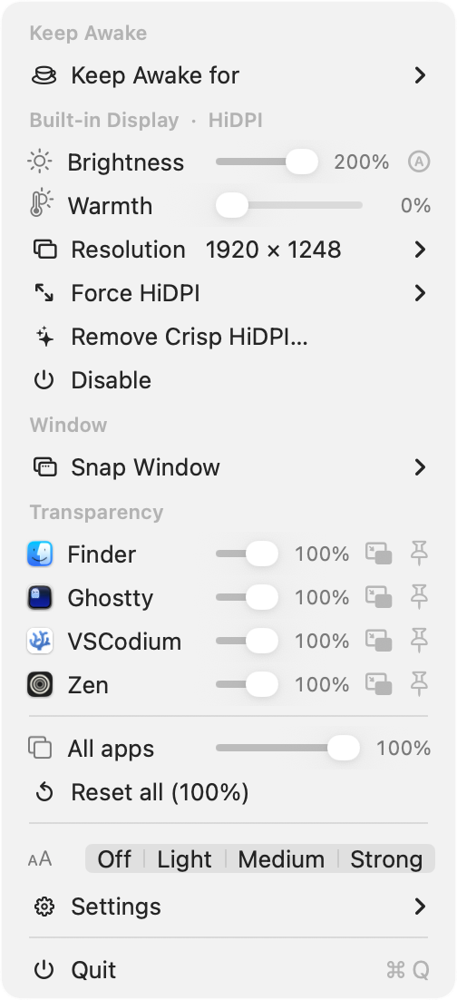
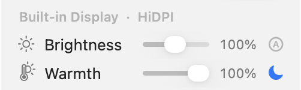
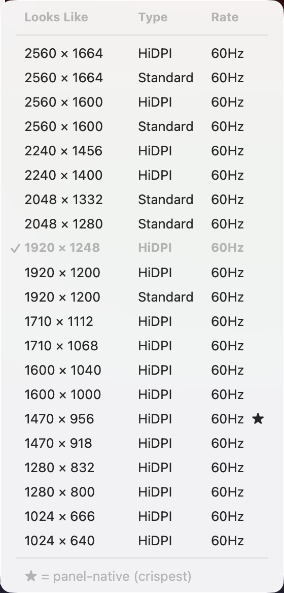
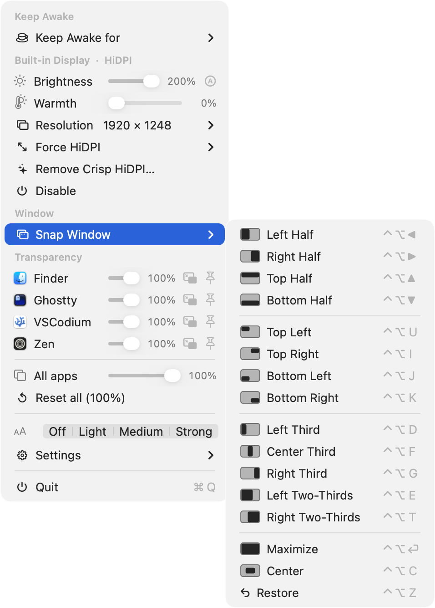
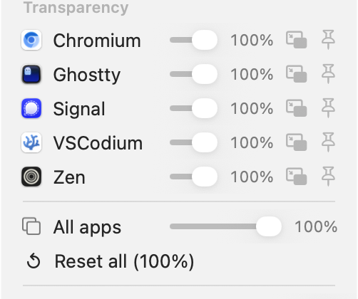
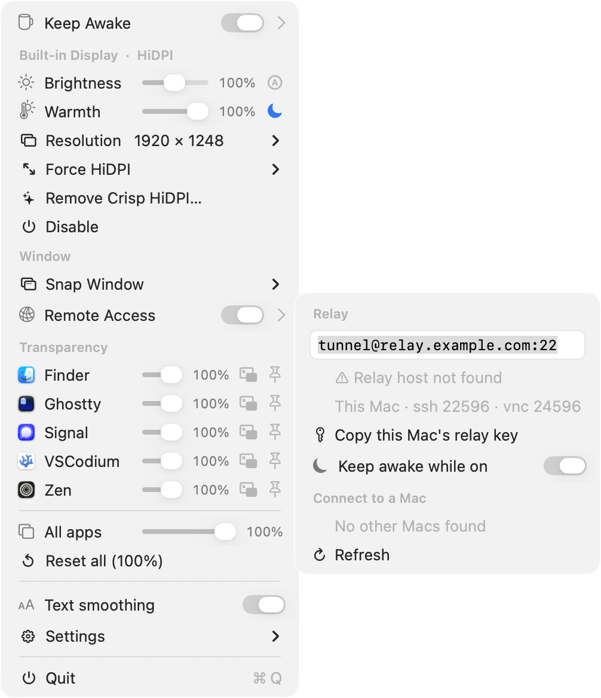
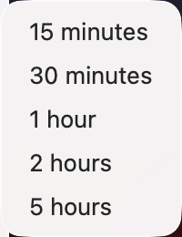

Disable screens, force crisp HiDPI, push brightness past 100%, warm the colors (auto at night), snap windows into place, make any window float or go transparent, reach your Mac from anywhere — and keep it awake. All from one coffee mug in your menu bar.

Each one leans on a private macOS framework to do something the system settings won't let you.
Turn off the built-in panel in clamshell or headless setups so it stays dark when the lid opens. Auto-disable on external connect — with a failsafe that re-enables it if a disconnect would leave you with no usable screen.
Add crisp, retina-scaled resolutions to displays that don't natively offer them, plus a "More Space" supersampling tier and optional persistent override plists.
Built-in and external brightness, an inline auto-brightness toggle, and a boost above 100% through an EDR overlay — large on XDR/HDR panels, a visible lift on standard ones.
A per-display color-temperature slider, f.lux style: neutral 6500 K down to a warm ~3400 K via gamma ramps. An automatic night schedule (the 🌙 toggle) eases warmth on at dusk and off by morning, hands-free.
Tile the focused window to halves, quarters, thirds, maximize or center — with global ⌃⌥ shortcuts, drag-to-edge snapping, and a menu of layout glyphs. No SIP changes needed.
Set any app's opacity, add frosted-glass blur, keep a window on top, or shrink one into a still-usable floating corner.
Reach this Mac — and your other Macs — from anywhere, nothing to install. An auto-reconnecting reverse-SSH tunnel through a relay you control forwards SSH, Screen Sharing, and file transfer; peers are auto-discovered with live online status, so you can Screen Share, SSH, or send files from the menu. Stays awake while on so it's reachable.
An IOKit caffeine assertion so your Mac and its display won't sleep — indefinitely (a toggle), or for a duration you pick. Left-click the mug to toggle.
Toggle macOS's grayscale antialiasing on/off — one system-wide switch across every display, the built-in included. Most visible on non-Retina, external, or scaled monitors. macOS treats it as binary, so it's a single switch.
Real captures from the menu bar — each one is the actual control, not a mockup.

Push the panel beyond full brightness with a real EDR boost, and ease the color temperature warm on a schedule after dark. Per display, with an auto-brightness toggle and a one-tap night mode.

A curated picker — ★ marks the panel-native, crispest mode — plus Force HiDPI's scaled "More Space" tiers. The retina sizes your display can actually do, that the system settings leave out.

Halves, quarters, thirds, maximize or center — by dragging to a screen edge, a global ⌃⌥ shortcut, or the menu. Every option shows a little screen glyph so you pick the right one at a glance.

Dial any app's opacity, add a frosted-glass blur, keep a window on top, or shrink one into a still-usable floating corner — for any app, per-app or all at once, not just the ones built to support it.

One reverse-SSH tunnel through a relay you control — Screen Share, SSH, or transfer files to any of your Macs, each shown with live online status. Nothing to install, no third-party service. It even tells you why if a connection can't be made.

Keep the Mac and its display from sleeping — on indefinitely, or for anywhere from 15 minutes to 5 hours. Or just left-click the mug to flip it on and off.
No bundled binaries, no daemon, nothing phoned home — just direct calls into private CoreGraphics, SkyLight and DisplayServices APIs.
// Because these are private APIs, behavior can change between macOS releases.
$ brew install --cask oabdrabo/tap/displaydeck
The cask installs to /Applications and clears the Gatekeeper flag for you. Update any time with brew upgrade --cask displaydeck.
# needs Xcode command-line tools $ git clone https://github.com/oabdrabo/DisplayDeck $ cd DisplayDeck && make install
Builds, ad-hoc signs, copies to /Applications, and launches. Starts at login by default.